Ordem Paranormal: Desconjuração é a terceira temporada da série Ordem Paranormal, continuação de O Segredo na Floresta. É uma campanha de RPG de mesa baseado em uma versão adaptada pelo mestre do sistema Chamado de Cthulhu (do inglês, Call of Cthulhu). Mestrada pelo streamer e diretor criativo de Enigma do Medo, Cellbit, é protagonizada por Arthur Cervero, Beatrice Portinari, Dante, Elizabeth Webber, Erin Parker, Fernando Carvalho, Joui Jouki, Kaiser e Luciano Carvalho.
A temporada teve um total de 20 episódios, transmitidos às 18 horas de todo sábado na Twitch do Cellbit. Todos os episódios também estão disponíveis no YouTube, no canal Lives do Cellbit.
Em 29 de maio de 2021, houve uma stream especial em que os jogadores se reuniram para discutir os eventos da temporada e seus personagens, além de elucidar as dúvidas dos espectadores e revelar alguns dos segredos que não foram descobertos ao longo da série.
O Santo Berço foi destruído. A reestruturada Ordo Realitas agora opera em uma base subterrânea na cidade de São Paulo. De lá, o homem conhecido como Senhor Veríssimo comanda uma legião de agentes que, com auxílio de métodos mais intensos, busca salvar o mundo da ameaça crescente do ocultismo.
Beatrice Portinari, uma florista com um passado misterioso, é a mais nova recruta da organização. Ela tem o auxílio dos novos colegas Erin Parker, uma animada engenheira especialista em explosivos, e Fernando Carvalho, um músico vivendo uma curiosa vida dupla, além dos veteranos Arthur Cervero, Joui Jouki e Kaiser. Dando uma nova formação para a equipe, eles recebem a missão de procurar e resgatar uma das mais importantes agentes da Ordem: Elizabeth Webber, que desapareceu enquanto investigava uma estranha ramificação ocultista, conhecida apenas como Ordem da Desconjuração.
Seis meses se passaram após os eventos de O Segredo na Floresta. O Senhor Veríssimo reúne um novo grupo de agentes para investigar o desaparecimento de Elizabeth Webber, veterana da Ordo Realitas, que estava na caça de uma célula ocultista conhecida apenas como Ordem da Desconjuração.
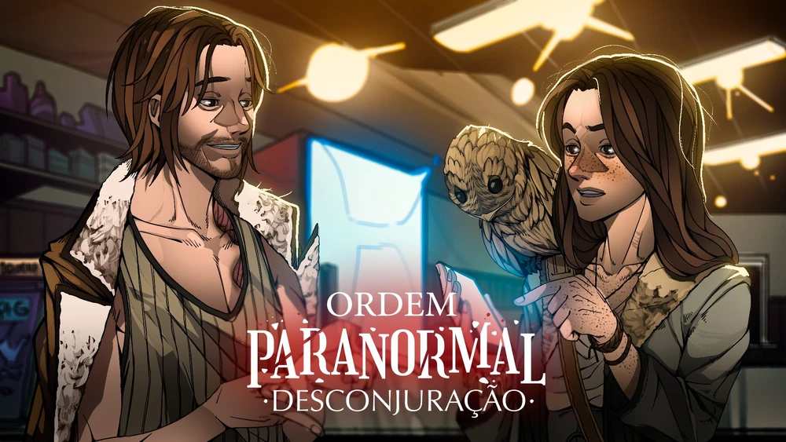Descendo até o estacionamento de um prédio suspeito, a equipe da Ordem enfrenta ocultistas, Zumbis de Sangue e seus próprios conflitos enquanto procura por explicações.
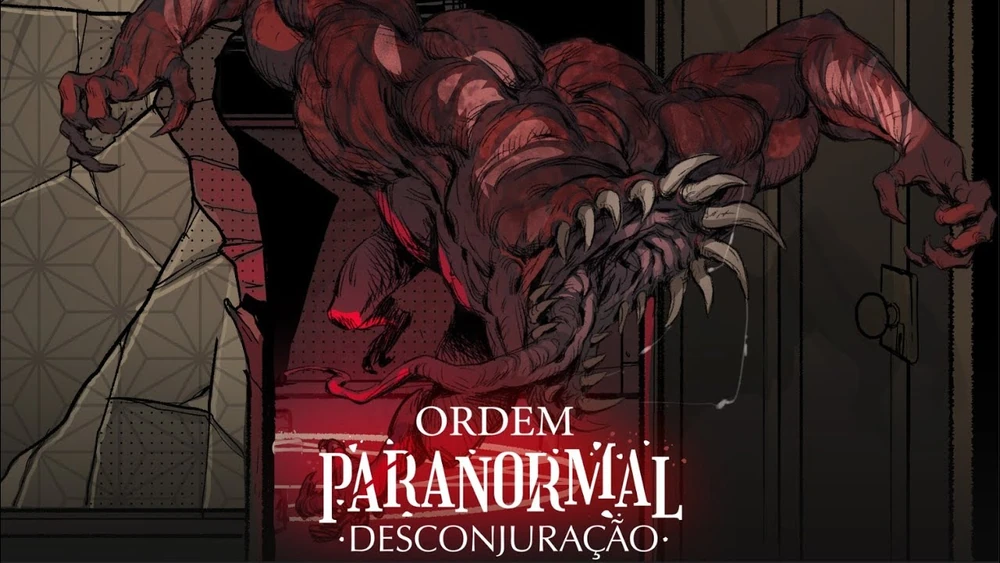De volta à base da Ordem após um duro confronto, a equipe se recupera dos ferimentos e descobre uma nada ortodoxa maneira de enfrentar seus inimigos. Entre traumas reprimidos e memórias esquecidas, os agentes da Ordem veem uma estranha coincidência os unindo a um orfanato abandonado.
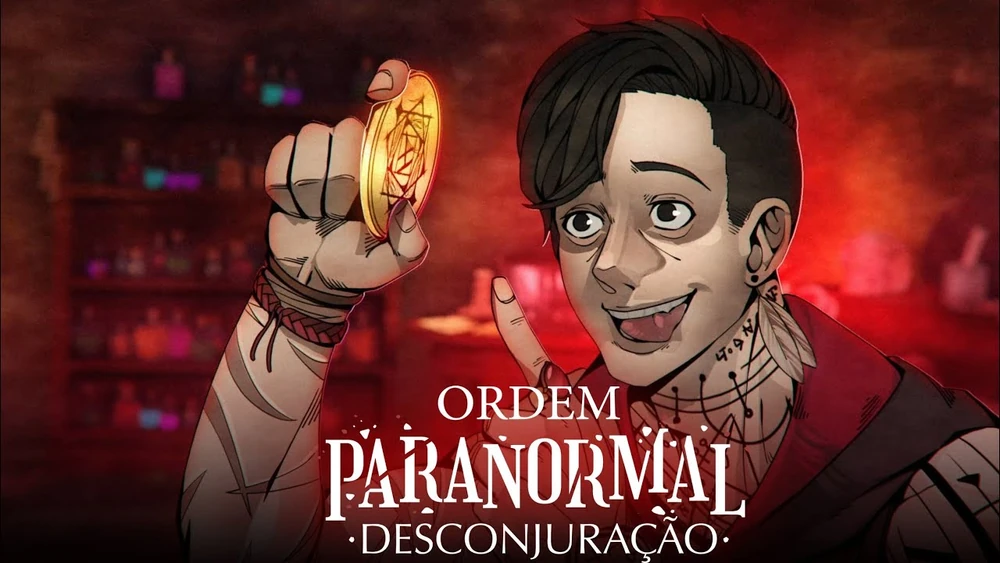O enterro de um dos seus chacoalha a equipe. O passado de Brúlio, líder da gangue de motoqueiros local, dá pistas sobre uma das bases de operação ocultistas.
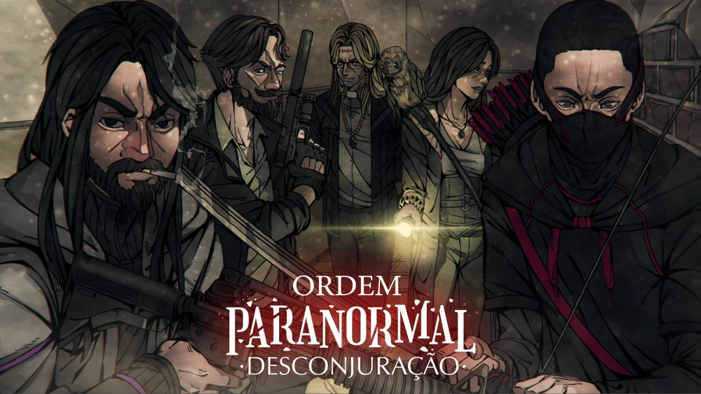A equipe continua explorando o misterioso orfanato em busca de respostas sobre sua amiga desaparecida. Entre desafios mortais e conhecimentos ocultos, lutar é a única saída para encontrar quem procuram.
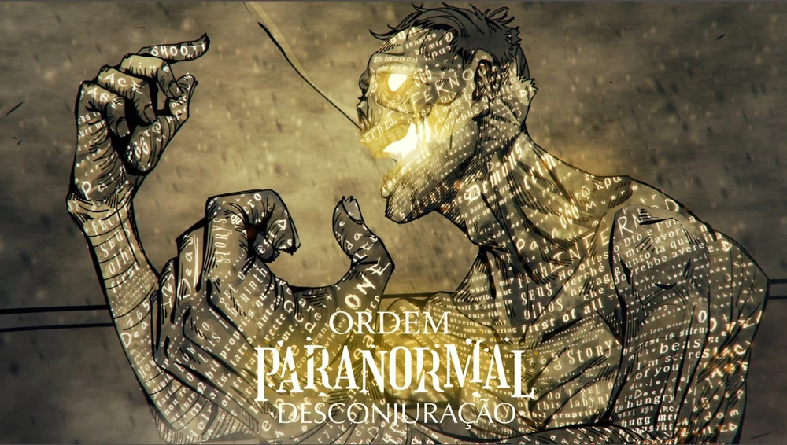Após uma longa investigação, a equipe finalmente encontra a agente Elizabeth em um orfanato abandonado, presa por um misterioso grupo nomeado "Escriptas".
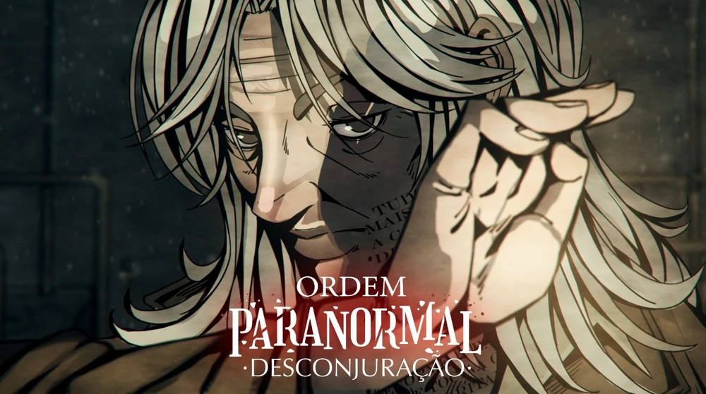Após concluir uma varredura no casarão, a equipe investiga uma estranha ocorrência no Cemitério de Carpazinha.
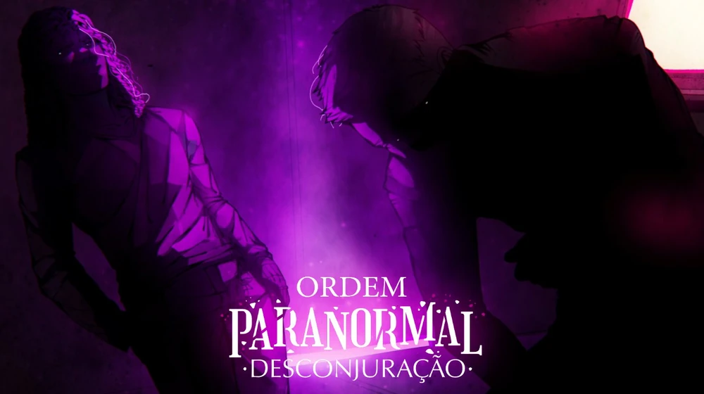Ainda se recuperando das perdas e fraturas de sua missão, a equipe tira a noite para repassar as informações do caso. Isso até Elizabeth introduzir o jogo "Eu Nunca" ao grupo.
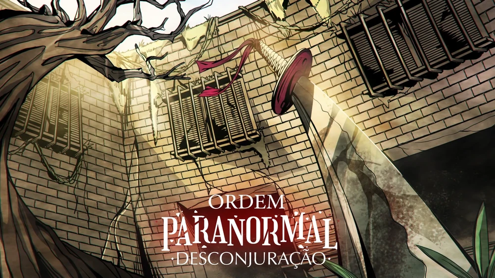O grupo enfrenta a misteriosa Seita das Máscaras na base da Ordem e continua sua investigação sobre Kian e os Escriptas, explorando uma mansão assombrada.
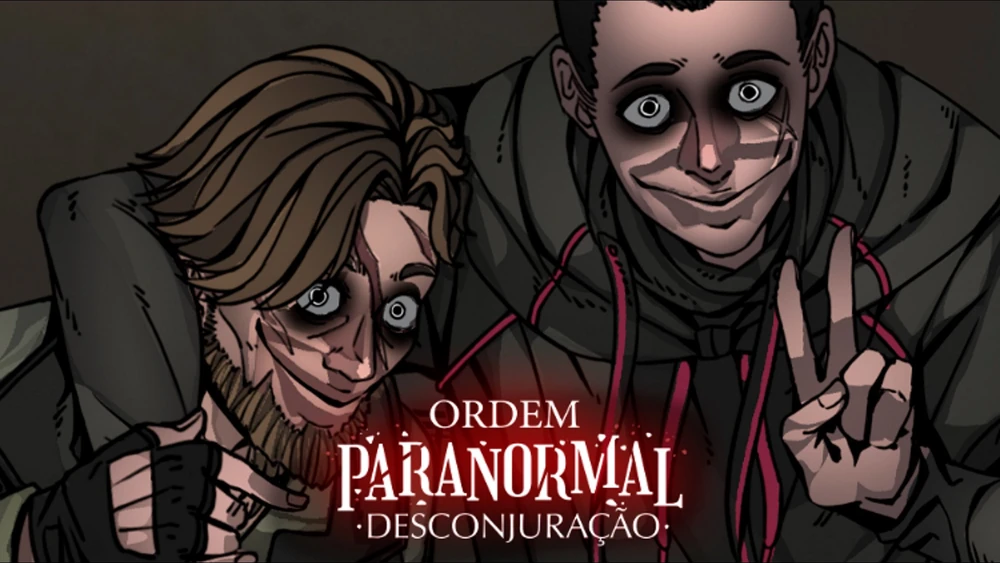A equipe continua investigando a misteriosa Mansão Endiabrada após um acontecimento terrível. E a cada passo a mais que dão, cada vez mais mistérios surgem em volta de tudo.
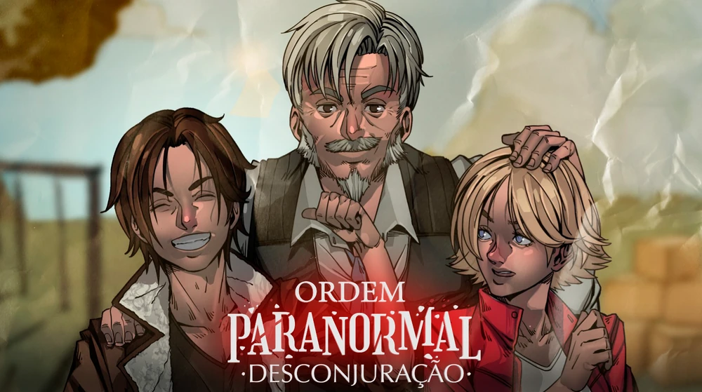Após uma intensa investigação, os agentes decidem montar uma estratégia para descansar na perigosa mansão. Porém, nesse lugar amaldiçoado, tudo pode acontecer...
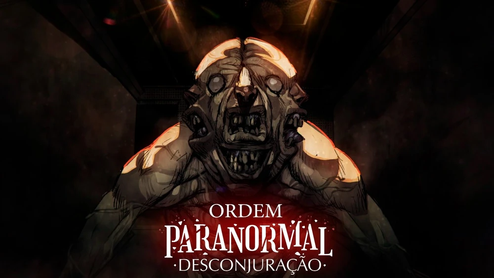Com um ar de tristeza e tensão pairando a Mansão Endiabrada, o grupo de agentes continua novamente sua investigação, tentando enfrentar os seus conflitos e passando por novas mudanças em suas vidas.
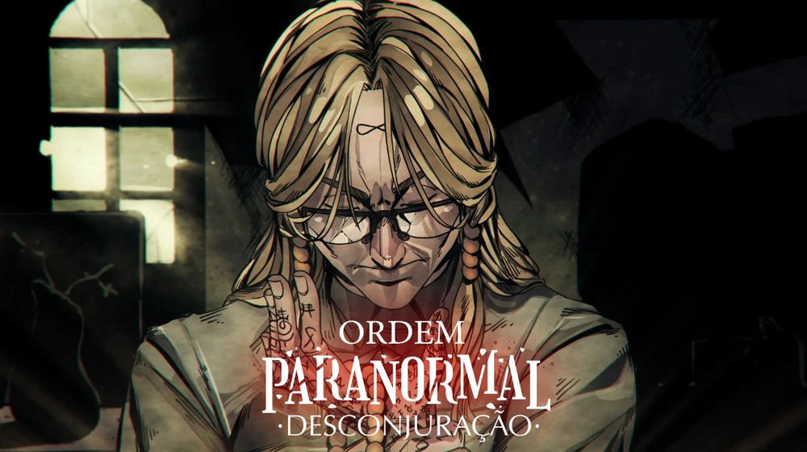Entre mistérios, bonecas, revelações e conflitos, os agentes da Ordem continuam sua investigação pela Mansão Endiabrada, conseguindo cada vez mais respostas sobre o passado desse misterioso local, e principalmente sobre Kian.
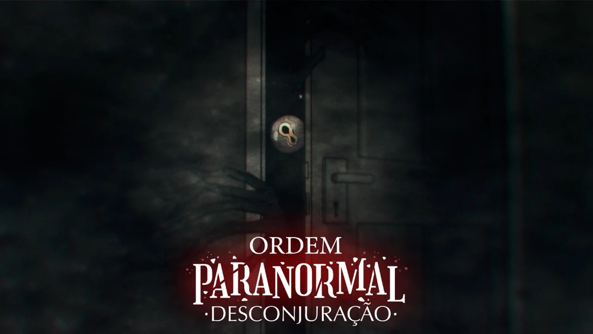Os agentes se preparam para enfrentar a criatura conhecida como O Espreitador. No entanto, contratempos e a chegada de Ivete prometem complicar ainda os trabalhos da equipe.

De volta à base depois dos horrores sofridos na mansão, a equipe divide seu tempo entre tratamentos médicos e homenagens. Mas quando Dante testa seu novo ritual, ele passa a ver o dilema de Beatrice de uma nova forma.
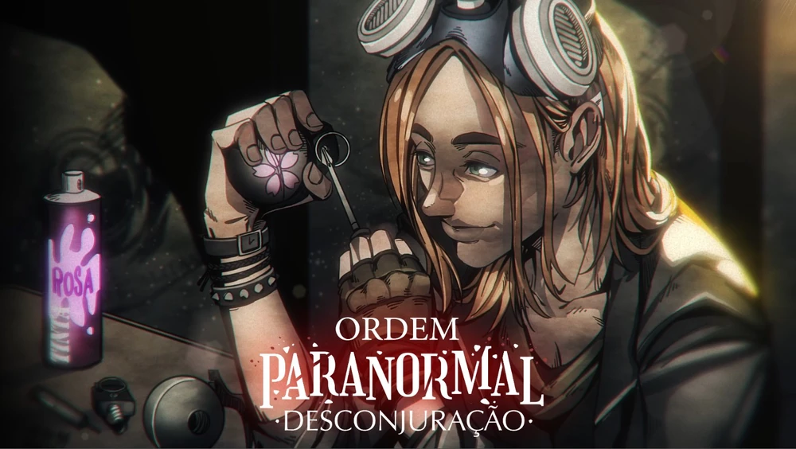Descansados e recuperados, os agentes retomam a missão na Mansão Endiabrada. Porém, uma estranha melodia inacabada parece ecoar no caminho da equipe.
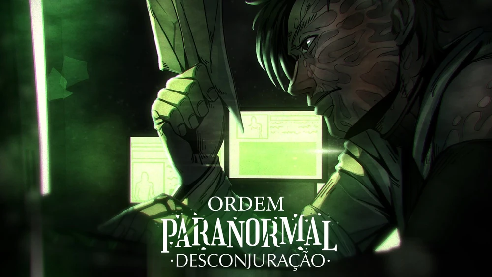Os agentes se preparam para a última parte da investigação da Mansão Endiabrada. Mas o que eles não esperam é um preço a se pagar ao final da investigação.

A última parte da investigação sobre Kian, Leonardo Gomes e os Escriptas se inicia. Uma urgência traz novamente os agentes da Ordem até a Mansão Endiabrada, onde o evento conhecido como Desconjuração está prestes a ser iniciado.

O fim está próximo. Rodeados de corredores repletos de textos escritos nas paredes, os agentes da Ordem, auxiliados por Bruno, se envolvem em mais um dos jogos de Anthony, o atual Tirigan, rumando apenas um objetivo: impedir a Desconjuração.
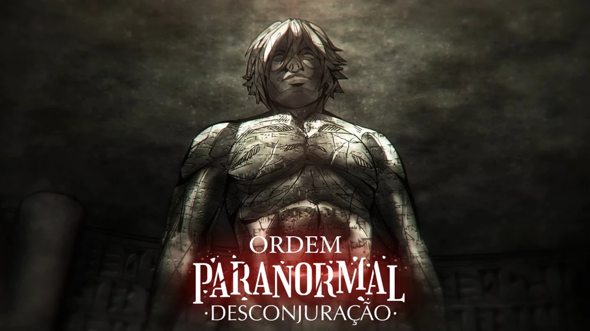O Dia Final da Desconjuração chegou. Arthur, Dante, Erin, Kaiser e Luciano, os agentes da equipe encarregada pela missão contra os Escriptas e Kian, rumam ao Orfanato Santa Menefreda para impedir Gal. Mas lá, eles aprendem muito mais sobre o que os envolve e o que tudo pode acarretar no futuro.
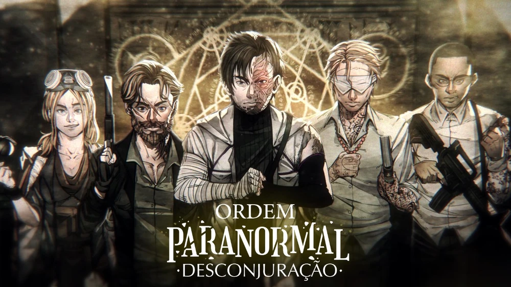| Company | Contact | Country |
|---|---|---|
| Alfreds Futterkiste | Maria Anders | Germany |
| Berglunds snabbköp | Christina Berglund | Sweden |
| Centro comercial Moctezuma | Francisco Chang | Mexico |
| Ernst Handel | Roland Mendel | Austria |
| Island Trading | Helen Bennett | UK |
| Königlich Essen | Philip Cramer | Germany |
| Laughing Bacchus Winecellars | Yoshi Tannamuri | Canada |
| Magazzini Alimentari Riuniti | Giovanni Rovelli | Italy |
| North/South | Simon Crowther | UK |
| Paris spécialités | Marie Bertrand | France |
Infelizmente, as trilhas sonoras das outras temporadas não foram liberadas.